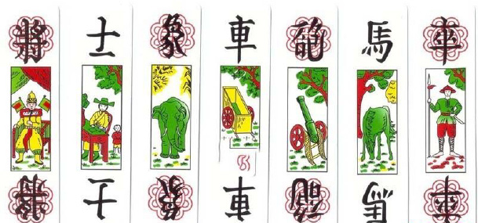
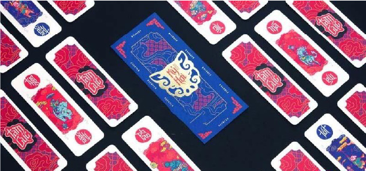

Cách Chơi Bài Tam Cúc: Hướng Dẫn Từ A Đến Z Cho Người Mới
Lần cập nhật cuối: 30 Tháng Năm, 2024
Tam cúc là trò chơi dân gian Việt Nam, được rất nhiều thế hệ ưa chuộng. Đến nay dù có nhiều loại bài mới xuất hiện nhưng Tam Cúc vẫn có một lượng người chơi cố định. Loại bài này có cách chơi đơn giản, dễ chơi dễ thắng. Trong bài viết này, cùng JBOVN tìm hiểu chi tiết cách chơi bài Tam Cúc nhé.
Tam Cúc là loại bài dân gian từ xa xưa
Giới thiệu về bài Tam Cúc
Bài Tam Cúc là một trò chơi bài phổ biến,có nguồn gốc từ miền Bắc và đã trở nên phổ biến ở nhiều nơi. Đây là một trò chơi giải trí thường được nhiều người dân lựa chọn, đặc biệt là thế hệ trước. Tam Cúc cũng đặc trưng cho văn hóa và thói quen của người Bắc.
Trò chơi thích hợp cho cả nam và nữ, đặc biệt được ưa chuộng bởi sự đơn giản, dễ nhớ, và dễ hiểu của nó. Mỗi ván Tam Cúc thường có 4 người chơi, nhưng có thể chơi với 2 người và thay đổi luật theo số lượng người tham gia. Điều này có thể bao gồm việc bỏ đi 1 hoặc 5 quân bài tùy thuộc vào quy định của từng ván.
Bộ bài Tam Cúc có thể mua ở nhiều cửa hàng tiện lợi, tạp hóa truyền thống hoặc trên các trang web, nhà cái. Ngày nay, nếu bạn không có “cạ” truyền thống để chơi Tam Cúc, bạn có thể thử nghiệm phiên bản trực tuyến. Có nhiều bản game trực tuyến với đồ họa đẹp mắt và cơ hội đổi thưởng.
Dù chơi truyền thống hay trực tuyến, quy tắc cơ bản của Tam Cúc vẫn không thay đổi: người chơi có nhiều lá bài nhất sẽ giành chiến thắng. Để hiểu rõ hơn về luật chơi, hãy theo dõi phần dưới đây.
Các lá bài trong Tam Cúc
Trong bài Tam Cúc, bộ bài gồm 32 lá, và việc phân biệt chúng không quá khó khi chúng được chia thành hai màu cơ bản: đỏ và đen. Dưới đây là mô tả chi tiết về mỗi lá bài:
- 将 (Quân Tướng): Là hình vị tướng có cờ đỏ phía sau, ghế ngồi và chỉ có một lá trong bộ. Tướng màu đỏ thường được gọi là “Tướng Ông” (là lá bài mạnh nhất), còn màu đen được gọi là “Tướng Bà.”
- 士 (Quân Sĩ): Là hình quan đội đội mũ cánh chuồn với hình bé đứng phía sau. Có 2 lá, màu đỏ thường được gọi là “Sĩ Điều.”
- 象 (Quân Tượng/Tịnh): Là hình con voi, có 2 lá bài. Màu đỏ được gọi là “Tượng Hồng,” còn màu đen là “Tượng Thâm.”
- 車 (Quân Xe): Có màu xanh, màu đỏ và màu vàng, với 3 quân xe một màu.
- 砲 (Quân Pháo): Có hình khẩu pháo, mỗi màu có 2 khẩu pháo.
- 馬 (Quân Mã): Là hình con ngựa, mỗi màu có 2 lá.
- 卒 (Quân Tốt): Là hình người lính cầm đao, có 5 quân tốt. Quân tốt đen là lá bài thấp nhất trong bộ.
Tam Cúc gồm nhiều quân bài dễ nhớ
Nhớ những đặc điểm này không quá khó, vì các lá bài thường được thiết kế với hình chữ nhật trắng, giúp bạn nhận biết dễ dàng. Luật chơi quy định rằng các quân bài cùng tên, màu đỏ sẽ lớn hơn màu đen, và thứ tự sắp xếp từ bé đến lớn là “tốt >> mã >> pháo >> xe >> tượng >> sĩ >> tướng.”
Luật chơi Tam Cúc dễ hiểu cho người mới
Trò chơi Tam Cúc khá dễ chơi, bạn chỉ cần nắm rõ luật dưới đây. Sau đó thực hành một vài ván bài là đã có thể thành thạo.
Hướng dẫn xếp lá bài Tam Cúc
Xếp đôi: Đặt hai quân bài cùng loại gần nhau để tạo thành đôi, ví dụ như đôi xe hồng hoặc đôi pháo đen. Xếp bộ 3: Bộ 3 sẽ được tạo thành từ 3 quân bài cùng màu sắc, bao gồm bộ 3 (xe, pháo, mã) hoặc bộ 3 (tướng, sĩ, tượng). Lưu ý: (tượng, xe, pháo), (sĩ, tượng, xe) không được tính là bộ ba. Tứ tử và ngũ tử: Có 4 lá bài tốt đồng màu sẽ tạo thành tứ tử. Có 5 lá bài tốt đồng màu sẽ tạo thành ngũ tử. Bài riêng lẻ: Các quân bài không thuộc bộ sẽ được xếp riêng lẻ.
Hướng dẫn chia bài Tam Cúc
Trong tam cúc, quy trình chia bài sẽ thay đổi tùy thuộc vào số lượng người chơi tham gia ván đấu. Cụ thể như sau:
- Chia bài Tam Cúc cho 2 người chơi: Mỗi người chơi nhận 16 quân bài và cần công khai những lá bài này.
- Chia bài Tam Cúc cho 3 người chơi: Trước khi chia bài, cần bỏ đi 5 quân bài (1 tốt đen, 1 quân sĩ đen, 1 tướng bà đen, 1 quân sỹ đỏ, và 1 quân tướng ông hồng). Sau đó, chia đều 9 quân bài cho mỗi người chơi.
- Chia bài Tam Cúc cho 4 người chơi: Mỗi người chơi nhận về 8 quân bài để bắt đầu ván đấu.
Xem thêm: Giới thiệu về game bài mậu binh siêu hấp dẫn.
Hướng dẫn cách chơi bài Tam Cúc cụ thể
Trong phiên bản chơi tam cúc online, người gọi đầu được chọn ngẫu nhiên và có quyền gọi từ 1 đến 3 cây bất kỳ. Các người chơi sau đó sẽ bỏ qua số quân tương ứng theo yêu cầu của người gọi đầu, và những lá bài này sẽ được đặt úp cho đến khi người gọi bài lật đầu tiên.
Sau khi lá bài được lật, bắt đầu vòng chơi lần lượt cho đến khi tất cả bài mở. Người có lá bài lật cao nhất sẽ giành chiến thắng và nhận cái. Trong trường hợp không muốn lộ bài, người chơi có thể chịu thua để tránh bị ngửa.
Cách chơi bài Tam Cúc đơn giản cho 2 – 4 người
Mức độ mạnh yếu của các bộ tam cúc được xác định như sau:
Gần cuối ván, có các thuật ngữ và tính điểm riêng. Trong lần gọi cuối, người gọi bài có thể kết đôi hoặc kết ba như pháo đen, xe – pháo- mã để nhận nhiều điểm hơn.
Tuy nhiên, nếu kết đôi có giá trị cao nhất là đôi xe hồng, đôi tương hồng hoặc tượng đen sẽ không được tính kết đôi thắng. Kết đôi tốt đen chắc chắn giành chiến thắng, nhưng nếu người gọi bài lượt cuối gọi ngũ tử, tứ tử hay đôi tốt đen mà bị người chơi khác mở theo yêu cầu, nhà cái sẽ bị đè tốt đen.
Trên đây là cách chơi bài Tam Cúc chi tiết và dễ hiểu được JBOVN tổng hợp. Tham gia chơi ngay cùng nhiều người chơi đến từ khắp nơi tại JBOVN nhé.
BÀI VIẾT MỚI NHẤT
Siêu Sao Bắn Cá JBOVN Hấp Dẫn Như Thế Nào?
Cách Chơi Bài Tấn & Thủ Thuật Chơi Cực Hay Ít Người Biết
Cách Chơi Bài Tam Cúc: Hướng Dẫn Từ A Đến Z Cho Người Mới
Thể thao điện tử – Sảnh cược đổi thưởng hấp dẫn tại nhà cái JBOVN
Hướng dẫn cách chơi Dice JBOVN dành cho tân thủ
Kèo rung – Tổng hợp thông tin từ A đến Z